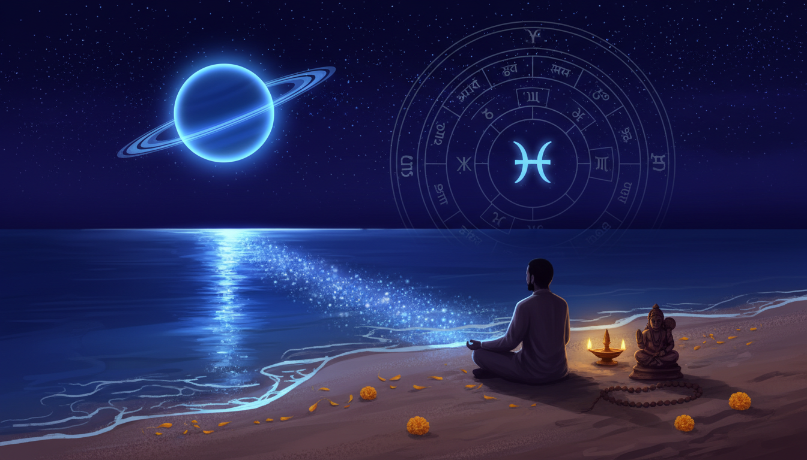

1. Introduction: Why 2026 is Your Year of "Maturity Over Myth"
The year 2026 represents a pivotal "Cosmic Audit"—a period of rigorous spiritual accounting where the universe demands a transition from rigid, external control to conscious, heart-led responsibility. As we navigate this landscape, we move through the final degrees of the Kalapurusha (the cosmic man), entering the 12th house of the zodiac, Pisces. This is not a time of fatalistic punishment, but a structured "soul cleanse" designed to dissolve illusions and ground spiritual ideals into concrete reality.

The central theme of 2026 is Maturity Over Myth. We are moving away from chasing external validation and toward building an unshakeable foundation of inner integrity. This shift is driven by three primary drivers: Saturn’s deep dive into the intuitive waters of Pisces, the rare exaltation of Jupiter in Cancer, and the fundamental pivot of the Nodal Axis (Rahu and Ketu) into the Capricorn-Cancer axis. Together, these movements force a confrontation between our worldly ambitions and our emotional roots.
2. The Saturnian Landscape: Navigating the Waters of Pisces
Saturn, the lord of Karma and "Karmic Mathematics," continues its journey through Pisces (2025–2028). In this watery, intuitive sign, Saturn behaves like a master architect attempting to build a stone structure on a shifting sea. It demands that we give our vague dreams a solid base, ensuring that our spiritual aspirations are backed by disciplined effort.
The Retrograde Phase (Shani Vakri)
A critical window for 2026 occurs during Saturn’s retrograde motion. While the High-Deceleration Shadow Phase begins on June 26, 2026, the official Retrograde Station occurs on July 27, 2026, lasting until December 11, 2026. During this time, Saturn gains exceptionally high Chesta Bala (motional strength), which directs its energy inward, functioning as a mandatory internal audit.
Saturn Retrograde Survival List:
- Anticipate "Delayed Delivery": With high Chesta Bala, Saturn intensifies internal pressure while slowing external results. Expect slowdowns in promotions and project timelines.
- Manage Financial Bottlenecks: Be prepared for payment delays; this is a time to audit your "Karmic Debt" rather than accruing new financial liabilities.
- Correct Past Structural Errors: Use this phase to strengthen unstable foundations. Projects launched without integrity will face a "Cosmic Veto" during this window.
- Assume Conscious Responsibility: Increased workloads are not punishments; they are tests of your ability to maintain structure under pressure.
Nakshatra Gateways
Saturn moves through two distinct energy fields in 2026:
- Uttara Bhadrapada (Saturn-ruled): The dominant phase focusing on structural discipline and finding emotional stillness in the depths of the unconscious.
- Revati (Mercury-ruled): The "Completion Energy." As Saturn touches this gateway, the focus shifts to the graceful closing of life chapters and mental restructuring.
3. The Nodal Pivot: Rahu and Ketu Enter the Capricorn-Cancer Axis
In December 2026, the Nodal Axis shifts, leaving the Aquarius-Leo axis and entering the Capricorn-Cancer axis. This move changes the collective karmic curriculum for the following 18 months.
- Rahu in Capricorn: Ambition is directed toward institutional power and career hierarchies. Rahu here seeks achievement through established systems and disciplined authority, often amplifying the desire for real estate and structural status.
- Ketu in Cancer: Ketu demands detachment from emotional dependencies. It asks us to release outworn family conditioning and security-seeking behaviors that hinder our maturation.
Thematic Clash: This transit creates a "Crucible of Belonging"—the tension between worldly achievement (Capricorn) and emotional roots (Cancer). The challenge is to build external success without losing your internal emotional foundation.
4. The Golden Window: Exalted Jupiter and the "Double Transit"
A major highlight occurs on June 2, 2026, when Jupiter enters Cancer, its sign of exaltation. This initiates a rare "Double Transit" dynamic where Saturn transits Pisces while Jupiter (from its highest strength in Cancer) casts its 9th aspect back onto Pisces.
### The Sudarshan Chakra of Divine Grace (Anugraha)
This alignment is a moment of Divine Grace. While Saturn demands that the "karmic debt" be paid, Jupiter in Cancer provides the "currency" of wisdom and emotional intelligence to pay it. Jupiter’s 9th aspect—the aspect of dharma and fortune—"glances" at Saturn, softening its cold discipline with a nurturing, spiritual warmth. It is the most auspicious window of the year for manifesting long-term goals with a heart-led approach.
5. The Sade Sati Report Card: A Status Update by Moon Sign
Saturn’s position in Pisces triggers the Sade Sati (7.5-year cycle) for three signs. To understand your experience, remember: Lagna (Ascendant) transits show physical/practical results, while Moon transits show mental/emotional impacts.
- The Great Escape (Capricorn): 2026 marks your "graduation." After 7.5 years of pressure, you are reaping the "Harvest of Endurance." This is a year of career rewards and newly found self-control.
- The Eye of the Storm (Pisces): You are in the Peak Phase. This is a total life reset. Saturn acts as a mirror, revealing where you lacked boundaries. It is a time for making vague dreams concrete through a "soul cleanse."
- The New Students (Aries): You enter the Rising Phase (12th house). This brings hidden stress and expenditure. Aggressive tactics will fail; Saturn is teaching you the power of silence and strategy over impulse.
- The Final Test (Aquarius): You are in the Setting Phase. The focus is on financial accountability and family values. Prove that the lessons you learned during your "Peak" have become permanent daily practices.
Secondary Pressure (Dhaiya):
- Leo (Ashtama Shani): This is a powerful Moksha house activation. While it brings psychological transformation, it is an elite time for Mantra Siddhi and spiritual practice.
- Sagittarius (Kantak Shani): Pressure on the 4th house creates a need for domestic stability and inner security. Avoid impulsive property decisions.
6. The 12-Sign Roadmap: Career and Growth Quick-Reference
| Zodiac Sign | Primary Career Theme | Spiritual Tool (Rudraksha/Remedy) | Notes (Nakshatra Influence) |
|---|---|---|---|
| Aries | 12th House: Hidden workplace politics & expenditure. | 10 Mukhi (Protection/Mahavishnu) | Focus on silence over impulse. |
| Taurus | Gains: Restructuring long-term financial goals. | 7 Mukhi (Wealth/Mahalakshmi) | Saturn is your Yogakaraka; trust the process. |
| Gemini | 10th House: Increased professional scrutiny. | 7 & 10 Mukhi (Balance/Protection) | Uttara Bhadrapada demands career discipline. |
| Cancer | 9th House: Delays in expansion/higher learning. | 10 Mukhi (Emotional Balance) | Jupiter’s exaltation in your sign provides relief. |
| Leo | 8th House: Unexpected expenses & joint-finance stress. | 7 Mukhi (Financial Stabilization) | A "Moksha" window; prioritize mantra chanting. |
| Virgo | 7th House: Audits of partnerships & contracts. | 10 Mukhi (Professional Harmony) | Revati completion energy may end old contracts. |
| Libra | 6th House: Massive increase in daily workload. | 7 Mukhi (Stamina/Calmness) | Victory over disputes through discipline. |
| Scorpio | 5th House: Re-evaluation of creative/speculative work. | 7 Mukhi (Financial Stability) | Avoid risky investments during retrograde. |
| Sagittarius | 4th House: Work-life balance & domestic friction. | 10 Mukhi (Grounding/Peace) | Focus on stabilizing the "inner home." |
| Capricorn | 3rd House: Communication delays & revised negotiations. | 7 Mukhi (Financial Support) | Harvest the rewards of your Sade Sati graduation. |
| Aquarius | 2nd House: Financial accountability & family values. | 7 Mukhi (Wealth Protection) | Guard your speech; Saturn reviews your assets. |
| Pisces | 1st House: Total career reset & physical fatigue. | 7 & 10 Mukhi (Reset/Balance) | The Peak Phase; make your dreams concrete. |
7. Practical Protocols: Navigating the 2026 "Crucible"
- Shani Jayanti (May 16, 2026): A rare Saturday Shani Amavasya. This is a supreme portal for karmic cleansing. Perform Tarpan (ancestor rituals) to mitigate Pitru Dosha and clear lineage blocks.
- The Hanuman Antidote: Devotion to Lord Hanuman is the primary neutralizing agent. Reciting the Hanuman Chalisa regulates Prana (life force), preventing the "paralysis of fear" often associated with Saturn.
- Saturday Charity (Daan): Saturn rewards the service of those who are overlooked. Donate black sesame, mustard oil, or footwear to laborers and the needy on Saturdays.
- The "Lagna vs. Moon" Strategy: For a complete audit, look at your Lagna to predict career events and physical changes, and your Moon sign to understand how you will process these changes emotionally.
8. Conclusion: The Harvest of Discipline
The mission of 2026 is not to destroy your progress, but to dissolve your illusions. By switching from rigid control to heart-led discipline, you align yourself with the cosmic flow. This year seeks to build an unshakeable foundation for the next 30-year Saturnian cycle.
Pro-Tip for Precision: To see how much natal support you have for this "Audit," check your Ashtakavarga scores in Jagannath Hora.
- Instruction: Go to Strengths -> Ashtakavarga -> Saturn.
- A score of 5 or higher in Pisces indicates a "Shield" of natal support; a score below 3 suggests a "Crucible" where extra patience is required.
2026 rewards the patient, the honest, and the disciplined. Stay grounded. Stay conscious. Stay responsible.
Sources
- Saturn Transit in Pisces: Sade Sati, Sub-Lords & Ashtakavarga ...
- Saturn Retrograde 2026: Shani Vakri Effects, Sade Sati Impact & Remedies - AjmerAstro
- Sade Sati Remedies: Mantras, Donations, Hanuman Worship ...
- Rahu-Ketu Transit in Capricorn-Cancer 2026-2028: Exact Dates, Nakshatra Phases, Eclipse Connection & Complete Analysis - Jagannath Hora
- Saturn Retrograde 2026 in Pisces: Effects on Career, All Zodiac Signs & Powerful Remedies
- Deadly Conjunctions: Saturn Ketu – Vedic Akshat
- Saturn in Pisces 2025–2028: The Nakshatra Gateways to Karma ...
- Shani Gochar 2026: Who's Entering Sade Sati in 2026, Who's Escaping, and Who's in Trouble - The Times of India
- Major Planetary Transits in 2026 : r/vedicastrology - Reddit
- Shani Jayanti 2026 on 16 May: Rare Saturday Shani Amavasya Yoga & Zodiac Impact
- Saturn Birthday Remedies - Birthday Powertime of Saturn on Affliction-Removing New Moon Day, To Transform Your Karma, Protect From Saturn & Ancestral Afflictions & Accomplish Goals - Live on May 26 at 5:30 PM PDT - Pillai Center
- Saturn Transit in Uttara Bhadrapada 2026: Date, Time, and Zodiac Sign Predictions
- Shani Vakri 2026 — July 13–Nov 28: Remedies, Rashi Impact and Live Timer | VedKosh
- Rahu-Ketu Transit 2026 | AjmerAstro
- Saturn Retrograde 2026: 4 Zodiac Signs About to Make a Life-Changing Decision Before Summer Ends - The Economic Times
- Pisces Yearly Saturn Horoscope 2026: The Peak of Sade Sati—Why Shani in Your Own Sign is a Call for a Total Life Reset - The Times of India
- Saturn in Pisces 2025: A Powerful Shift in Karma, Growth, and Spiritual Awakening
- Saturn Transit Pisces 2025-2027 Historical Events - dkscore
- Saturn in Pisces Transit: A Vedic Guide to Spiritual Growth - dkscore
- A rare tithi is coming in June 2026. Here's how it may affect your life | Astrology
- Saturn Retrograde 2026 Begins July 27: Zodiac Signs Affected - The Economic Times
- Saturn Out of Combustion in Pisces: Astrological Meaning Sade Sati Relief and Karmic Insights - dkscore
- Saturn's Re-Entry in Purva Bhadrapada Nakshatra: These Zodiac Signs Need To Be Extra Watchful - The Times of India
- Rahu–Ketu Transit Dec 2026... : r/vedicastrologyexperts - Reddit
- Rahu Ketu Transit 2025–2026: Peyarchi & Remedies - AstroVed
- The 2026 Retrograde and Planetary Forecast to Help You Flow with Cosmic Energy
- Saturn Retrograde 2026: Dates, Meaning & Zodiac Sign Guide | Almanac.com
- Saturn in Pisces 2025-2028 - Northern Lights Vedic
- Rahu-Ketu Transit 2026: Capricorn & Cancer Effects - Om.AI
- Rahu–Ketu Transit 2026: 4 Zodiac Signs Experience Destiny Shifts - The Economic Times
- Chaitra Amavasya 2026: Date, Timings, and Rashi Effects
- Today's Panchang, 18 March 2026, Wednesday, "Darsh Amavasya" - Reddit
- Pitru Paksha Mantra – Powerful Chants For Ancestral Blessings - Pandit Milind Guruji
- Shani Remedies to Protect Yourself From Negative Effects of Saturn - The Times of India
- Why Hanuman Ji Is the Ultimate Remedy for Fear, Anxiety & Weak Saturn (Astrology Explained Clearly) | by Kundalicards | Medium
- Uttara Bhadrapada Nakshatra: The Cosmic feminine authority Rise from Depth to Power - dkscore
- Satyamshakti Poonam Dutta Tantra & Vedic Spiritual guide
- Aries Spiritual Awakening: Vedic Astrology Guide for 2026 - AstroSight
- Hanuman & Shani: Palm Leaf Remedies for Saturn's Challenges
- Is Saturn-Ketu a disastrous conjunction? : r/vedicastrology - Reddit
- Remedies of planet Saturn as per Vedic Astrology - Divine Rudraksha
- Karmic Astrology Course Certificate | Free & Fast Course - Elevify
- Lessons Through the Zodiac" Dr Neeraj Rajinder Nahar Introduction In Vedic astrology, Saturn, or - International Journal of Research in Economics and Social Sciences
- Ancestral Healing Tarot Deck Guidebook - Polar Embassy
- Can we have a real discussion regarding next saturn transit : r/Tantrasadhaks - Reddit
- 2026 Astrology Forecast: Major Transits, Eclipses, Retrogrades, and a Year of Change
- 2025, September 20: Saturn at Opposition, Venus Steps Away from Regulus
- Astronomy Picture of the Day Archive - NASA
- 2026, March 8: Daylight Time Begins, See Moon and Planets - When the Curves Line Up
- Forecast — Tamiko Fischer Vedic Astrology (Jyotish)
- Saturn Jayanthi | Saturn Birthday | AstroVed.com
- Saturn Retrograde 2026 New Delhi - Dates & Timings - PanchangBodh
- Is Today a Holiday? | U.S. Holidays, Folklore & Observances | Almanac.com
- Journal - Maggie Hippman VEDIC ASTROLOGY
- The Astrology of November 27, 2025
- Saturn Retrograde in Aquarius ~ Forging a path to long-term success - align 27
- 2025, July 13: Venus-Aldebaran Conjunction, Saturn's Retrograde Begins, Bright Morning Moon - When the Curves Line Up
- Saturn in Pisces – Astrological Insights - Indastro
- A Year Later Again ** Cosmic Insights 01: Saturn-Ketu Conjunction - A Karmic Roadblock or Path to Inner Growth? ** : r/Astrology_Vedic - Reddit
- Karmic Insights: Saturn, Rahu, and Ketu in Vedic Astrology - dkscore
- Retrograde saturn in 4th house pisces : r/Nakshatras - Reddit
- Saturn Ketu Conjunction In Saturn's Uttara Bhadrapada Nakshatra in Pisces - Reddit
- When will Saturn leave pisces? : r/vedicastrology - Reddit
- Cursed Saturn Rahu conjunction 2025 energy - Psychologically Astrology
- Saturn in Pisces: Reality Bites - THE PLUTO BABE: Evolutionary Astrology
- Upcoming planetary retrogrades of 2026: Key dates and astrological implications - Lifestyle Asia Hong Kong
- Shani Vakri 2026 Suryaputra will remain retrograde for 138 days know which zodiac sign will be affected the most | Gujarat News | Sandesh
- Retrograde planets 2026: complete guide to movements and effects on zodiac signs - nss G-Club